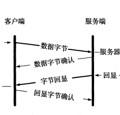
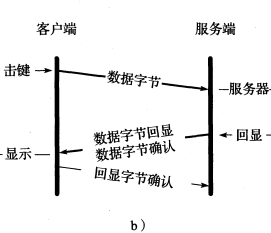
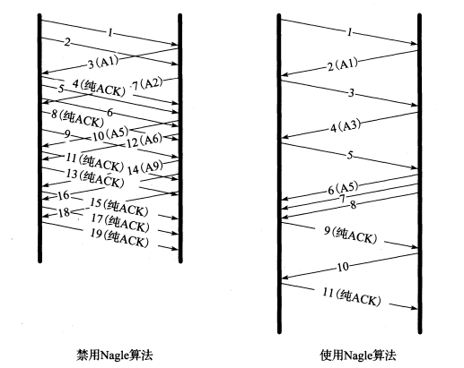
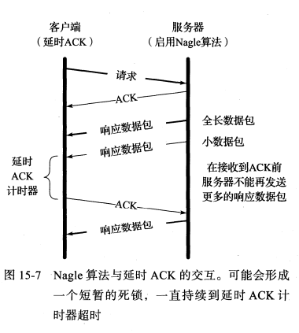
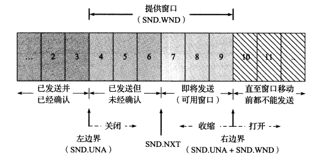
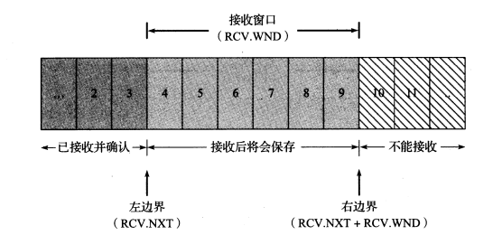

[TCP/IP详解]:TCP数据流与窗口管理
1. 交互式通信
交互式TCP连接
交互式TCP连接指的是该连接需要在客户和服务器之间传输用户输入信息，如按键操作，短消息或者是鼠标操作，这些操作会产生交互式数据, 一般都是一些比较小的报文段
例: ssh
ssh(Secure Shell, 安全外壳协议), 是一种安全的远程登录协议, 会在数据传输之前将用户输入的信息进行加密
ssh会在远程系统上调用一个shell, 对用户的输入字符做出回显, 用户每按下一个按键都会生成一个单独的数据包
数据报交互图

通常，第二三段可以被合并，这是接下来会说明的延时ACK技术
延时ACK数据包交互

2. 延时ACK
一般情况下，当接收方收到某个报文段时，并不会立即对发送端返回ACK, 而是会延时一段时间，以便将ACK和相同方向上需要传输的数据结合发送, 这被称作捎带延时确认
延时时间通常是200ms
优势
使用延时ACK可以减少网络中的报文数目，一定程度上可以减轻网络负载
LInux采用了一种动态调节算法，可以在”立即返回ACK”与”延时返回ACK”两种模式之间切换
3. Nagle算法
在之前谈过的ssh协议中，每次按下一个按键就会发送一个数据包，下面分析以下该数据包的组成:
- IP报文头: 20字节
- TCP头: 20字节
- 数据: 48字节
可以看到，数据部分占比几乎只有一半，大量这些微型数据包会造成相当高的网络传输代价, Nagle算法提出了一种解决方案
算法思想
Nagle算法要求:
- 当一个TCP连接中有已发送但未收到ACK的数据时，那些微型数据包(小于SMSS, Sender MSS)就不能够被发送, 直到所有的在传数据都收到ACK
- 当所有在数据收到ACK之后，TCP需要整合这些小的数据包，将其整合到一个报文段中发送
该算法也被称为stop-and-wait规则， 特点是在任意时刻只有一个方向保持传输状态

优点
- 实现了self-clocking: ACK返回的越快，数据传输地也就越快
- 使得单位时间内发送的报文段的数目更少
缺点
- 单个包的传输时延增加了
延时ACK与Nagle算法
图例

由于服务器端在接收到ACK之前不能发送响应数据报，而ACK延时机制又会持续等待，因此会形成一个暂时的死锁
因此，这两种机制在一起效果会很差，ssh默认禁止了Nagle算法
4. 流量控制与窗口管理
每个TCP报文段当中都包含窗口大小字段，该字段表明发送该窗口信息的通信方为即将到来的新数据项预留的存储空间，当接收方可用的存储空间不足时，就会减小该字段
滑动窗口
TCP连接的每一端的收发数据量是通过一组窗口结构来维护的，分为发送窗口以及接收窗口，窗口结构以字节为单位
发送窗口(提供窗口)
发送窗口如图所示

发送窗口包含3个变量
- SND.UNA: 左边界， 位于左边界的数据均已经发送并收到ACK
- SND.NXT:可用窗口的开始位置
- SND.WND: 发送窗口的大小
使用三个术语来描述窗口边界的运动:
- 关闭(close): 窗口左边界右移，当已发送数据接收到ACK时会触发
- 打开(open): 窗口右边界右移, 当接收到的ACK中的窗口大小字段变大时触发
- 收缩(shrink): 窗口右边界左移
注：左边界不可能左移，因为ACK号是累计的
接受窗口
接收方的窗口更加简单

- RCV.NXT: 左边界，左边的数据均已经接收并发送ACK
- RCV.WND: 窗口大小, 当接受端接收到窗口内部数据时，会将其保存
对于接收端来说，当接收到位于窗口之外的数据时会直接丢弃，而接收到窗口内部的数据时会保存，
仅当接收到窗口最左边的字节时窗口会发生滑动，而当打开
SACK选项之后，窗口内的其他乱序数据也会被接受
5. 零窗口与TCP持续计时器
零窗口
当接收端给发送方发送的报文段中的窗口大小字段为0时，发送方便会停止发送报文段，直到其接收到接收端发送的
窗口更新报文段为止
窗口更新
窗口更新报文段是一个不包含数据的纯ACK(只有ACK标志位被置位), 用于通告发送端可以继续发送数据，纯ACK不会被重传, TCP必须采取相应措施来处理这些丢包
持续计时器
如果一个包含窗口更新的ACK丢失，通信双方就会一直处于等待状态：
- 接受方等待接受来自发送方的数据
- 发送方等待来自接收方的窗口更新
此时就会导致一个死锁，TCP使用了持续计时器来解决死锁问题:
窗口探测
发送端会使用一个持续计时器，每当持续计时器超时，就会向接收端发送**窗口探测(window probe)**报文段
强制要求接收端返回ACK, 该计时器也采取了指数退避方法
窗口探测报文段包含一个字节数据，因此可以被重传，避免了死锁
糊涂窗口综合征
概念
如果接收⽅太忙了，来不及取⾛接收窗⼝⾥的数据，那么就会导致发送⽅的发送窗⼝越来越⼩。，
到最后，如果接收⽅腾出⼏个字节并告诉发送⽅现在有⼏个字节的窗⼝，⽽发送⽅会义⽆反顾地发送这⼏个字节， 这就是糊涂窗⼝综合症(Silly Window Syndrome, SWS)
简而言之就是发送方和接收方一直在传输小报文段
解决方案
糊涂窗口综合征的原因就在于发送方和接收方传输的数据太小，因此只要组织他们发送小数据报即可
接收端
当「窗⼝⼤⼩」⼩于 min( MSS，缓存空间/2 ) ，也就是⼩于 MSS 与 1/2 缓存⼤⼩中的最⼩值时，就会向发送⽅通 告窗⼝为 0 ，也就阻⽌了发送⽅再发数据过来
发送端
思路是采用Nagle算法，将小报文段整合成大报文段，仅当发送报文段满足以下条件之一时才能发送
报文段大小为全长(MSS)
纯数据段的长度 >= 接收端通告过的最大窗口值一半
这需要发送方不断记录并更新接收到的最大窗口大小值
接收到错误ACK
连接禁用Nagle算法
本博客所有文章除特别声明外，均采用 CC BY-SA 4.0 协议 ，转载请注明出处！